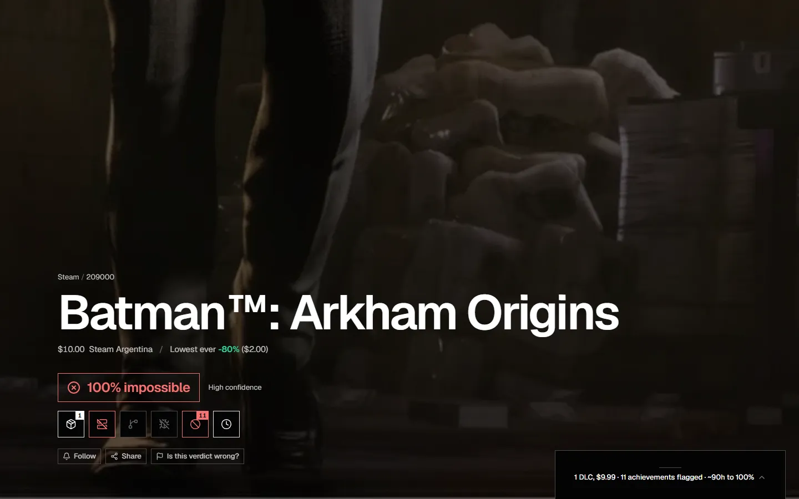
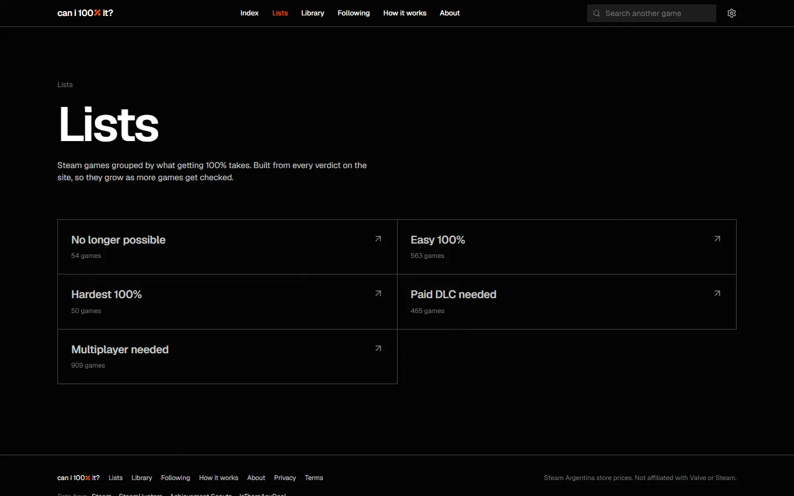

The problemEl problema
(01)Researching a game takes longer than playing it. Steam, achievement hunter databases, forums, guides.Investigar un juego antes de jugarlo lleva más que jugarlo. Steam, bases de datos de cazadores de logros, foros, guías.
To know whether a game can be 100%'d you have to cross-check all of those sources. And often the answer is no.Para saber si un juego se puede completar al 100% hay que cruzar todas esas fuentes. Y muchas veces la respuesta es no.
Servers that were shut down, bugged achievements, achievements lost forever after one wrong choice, and others that only exist inside paid DLC.Hay servidores que se apagaron, logros con bugs, logros que se pierden para siempre si te equivocás de decisión y otros que solo existen dentro de un DLC pago.
Four possible answersCuatro respuestas posibles
(02)- A100% possible100% posible
Every achievement can be unlocked today.Todos los logros se pueden conseguir hoy.
- B100% impossible100% imposible
At least one achievement is out of reach for good.Al menos un logro quedó fuera de alcance para siempre.
- CNot enough infoInfo insuficiente
There isn't enough evidence either way, and it says so.No hay pruebas suficientes para un lado ni para el otro, y lo dice.
- DNo achievementsSin logros
The game has no Steam achievements to unlock.El juego no tiene logros de Steam para conseguir.



All on one screenTodo en una pantalla
(03)Missable and bugged achievementsLogros perdibles y con bugs
Flagged one by one, with spoilers hidden by default.Marcados uno por uno, con spoilers ocultos por defecto.
Paid DLCDLC pagos
Which ones are required and what they cost in your store.Cuáles hacen falta y cuánto cuestan en tu tienda.
Multiplayer and serversMultijugador y servidores
Whether any achievement needs online play and whether the servers are still up.Si algún logro pide jugar online y si los servidores siguen vivos.
Time to 100%Tiempo al 100%
How long players really take.Cuánto tardan de verdad los jugadores.
Price and lowest everPrecio y mínimo histórico
Prices for your region and its biggest Steam discount.Precios de tu región y el mayor descuento en Steam.
Follow games, no accountSeguir juegos, sin cuenta
A heads-up when the verdict changes or it hits its lowest price.Aviso si cambia el veredicto o llega a su precio más bajo.
Data decides firstLos datos deciden primero
(04)AI only fills in what no curated source covers.La IA solo completa lo que ninguna fuente curada cubre.
Achievement hunter data has the final say. Gemini reads forum threads, guides and wikis only when needed, and every verdict carries its confidence level.Los datos de cazadores de logros tienen la última palabra. Gemini lee hilos de foros, guías y wikis solo cuando hace falta, y cada veredicto lleva su nivel de confianza.
The hardest partsLo que más me costó
(05)- D.01
AI only where it is neededLa IA, solo donde hace falta
Asking a model for everything is expensive and gives answers that change from one day to the next. The verdict comes from rules in code over curated data; Gemini only reads forums when nothing curated covers the case.Pedirle todo a un modelo sale caro y da respuestas que cambian de un día para el otro. El veredicto sale de reglas en código sobre datos curados; Gemini solo lee foros cuando nada curado cubre el caso.
Plan B.AI only steps in when curated data is missingla IA entra solo cuando faltan datos curados - D.02
Multiplayer read from each achievementMultijugador leído de cada logro
Steam says whether a game has multiplayer, not whether an achievement needs it, and removes the category when servers close. I detect it from each achievement's text and flag servers that are down.Steam dice si un juego tiene multijugador, no si un logro lo pide, y borra la categoría cuando cierra los servidores. Lo detecto desde el texto de cada logro y marco servidores caídos.
621→302games flagged as “requires multiplayer”, with far fewer false positivesjuegos marcados como “requiere multijugador”, con muchos menos falsos positivos - D.03
Nightly run on leftover quotaAnálisis nocturno con la cuota que sobra
Between 11 pm and 2 am, a scheduled job analyzes popular games without a verdict using the free quota left from the day, and keeps a reserve for visitors.Entre las 23 y las 2, una tarea programada analiza juegos populares sin veredicto con la cuota gratuita que no se usó en el día, y deja reserva para las visitas.
~100new games a nightjuegos nuevos por noche - D.04
Private by design, no accountsPrivado por diseño, sin cuentas
Followed games, recents and settings live in your browser, with one button to wipe them. Underneath: a nonce-based CSP, rate limits, in-house error monitoring and Argentina's data protection law.Seguidos, recientes y ajustes viven en tu navegador, con un botón para borrarlo todo. Debajo: CSP con nonces, límites de uso, monitoreo de errores propio y Ley 25.326.
0accounts to sign up forcuentas para registrar